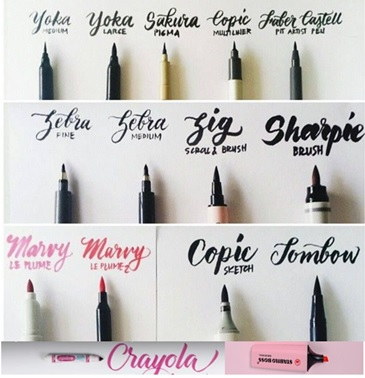
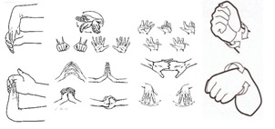
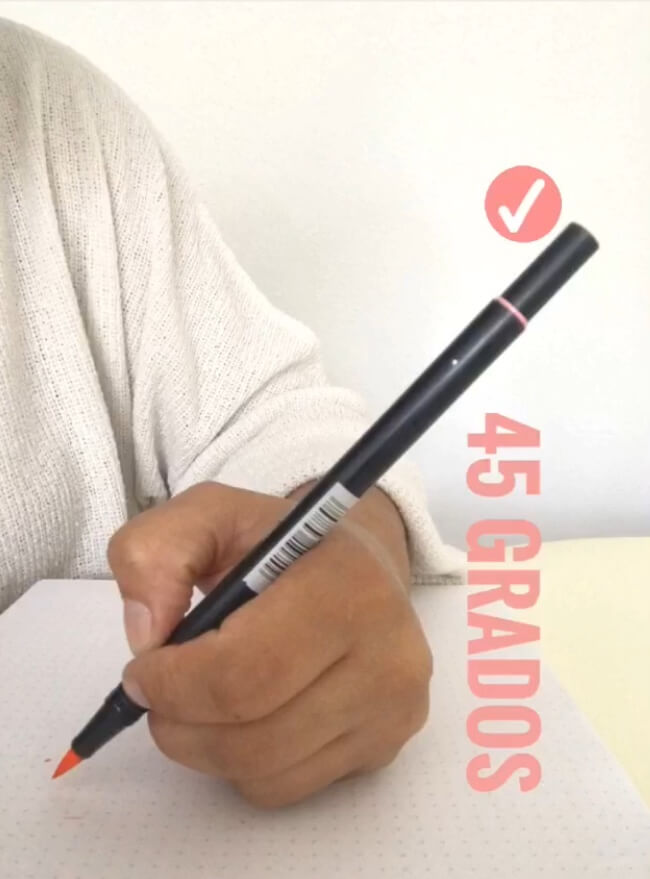
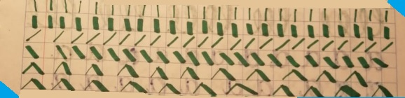
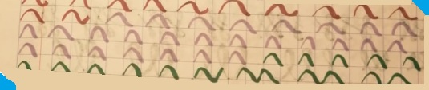
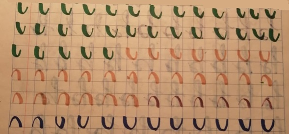
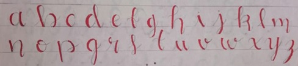

"¿Cómo practicar Lettering?"

Al ya conocer tanto la definición, los tipos de lettering empezaremos con los pasas para irlo practicando. "Recuerden la práctica hace al maestro".
Para practicar el Brush Lettering necesitaremos lo siguiente:
Materiales:
En el mercado existen diferentes tipos de punta de los plumones con los cuales pueden hacer lettering (punta cónica, punta pincel, punta angular, punta fina como los Stabilos (ayudándonos con el Falso Lettering)) considerando que para cada tipo de punta se tiene que manejar de manera diferente para tener ese efecto; pero no se preocupen en este post le enseñaremos los primeros pasos donde al practicarlos entenderán como hacerlo. Si está en sus posibilidades conseguir o tener plumones como los Crayola Super tips o los Prismacolor punta pincel (ambos se encuentran a un precio bajo) y un cuaderno de raya, cuadro grande o una hoja blanca (en caso de escoger tendremos que hacer líneas de unos 5 cm aproximadamente de separación ayudándonos de una regla) nos ayudaran a iniciar este bello arte.

Sugerencias:
Antes de empezar hacer los trazos les sugiero hacer ejercicios que muevan sus manos principalmente sus muñecas en forma circular, después habrá y cierren sus dedos esto con el fin de "calentar sus manos" para que los trazos sean más fluidos y no le tiemble las manos, en la siguiente imagen pueden ver que otros ejercicios pueden realizar.
Una vez hecho estos ejercicios para practicar a soltar la mano con los pulmones y después sea más fácil hacer las letras, dependiendo la punta de pincel que consiguieron es necesario cuidarlos por lo que sugiero: Si son los Crayola supertips (punta cónica), al momento de hacer el trazo no presionar demasiado la punta sobre el papel (esta sugerencia también aplica para la punta pincel), también tratar de que tu plumón se encuentre en un ángulo de 45 grados o de manera vertical, esto ayudara hacer los trazos gruesos.
En el caso de los SuperTips al momento de hacer un trazo grueso la punta se hace un poco chueca por lo que es conveniente que en cada uno de estos trazos y rotando el pincel para que se encuentre derecho la punta.

Primeros Pasos:
Teniendo presente las sugerencias antes mencionadas empezaremos con los primeros trazos, con la regla de oro del lettering: "Cada vez que el trazo baje será grueso y al subir el trazo será delgado" por lo que empezaremos haciendo líneas de 90 grados 2 gruesas (trazo para abajo) y 2 delgadas (trazo para arriba) y así continuamente hasta terminar la primera línea recuerden que para conseguir el trazo grueso su plumón debe estar en un ángulo de 45 grados coloquen presión (no mucha para no maltratar la punta) y para el trazo delgado solo no coloques mucha presión; la siguiente líneas sigue con las líneas de 90 grados pero toda una fila de gruesas y otra de delgadas como se muestra en la imagen.
El siguiente trazo será en forma diagonal una fila delgada y la otra gruesa.
Continuamos con trazos verticales pero ahora juntando los gruesos y delgados.

Para perfeccionar el trazo que posteriormente ocuparemos ejemplo en la letra m, n, etc. Haremos ondas gruesas y delgadas.

Para perfeccionar el trazo para las letras que tienen ondas circulares, haremos medias "u" considerando la regla de oro, después haremos ondas tipo "n" y tipo "u".

Continuamos con hacer formas tipo "o", como se muestra a continuación.

Es necesario practicar, practicar hasta que los trazos nos salgan de manera natural y sean más asimétricos, así mismo no se desaminen si al principio no salen bonitos los trazos, por ejemplo:
"Las imágenes mostradas son mi primera práctica y como se puede ver no están tan asimétricos ni lindos, pero con la práctica se va mejorando."
Ya manejando esos trazos empezarnos hacer las letras, a continuación, les mostrare las letras que pueden utilizar considerando que la parte roja es el trazo grueso y la parte en lápiz es el delgado; en caso de que en Internet encontraron otra platilla que les agraden, practiquen esas letras con planas de cada letra, al ya conocer cómo van los trazos de cada letra será más fácil juntar cada letra para hacer palabras, poco a poco van a obtener sus propios estilos.

En conclusión, la práctica es muy importante para que la letra y las palabras estén mejorando, no se desanimen y la constancia darán frutos.


Garcia Montijo Meliza
Estudiante de Informática